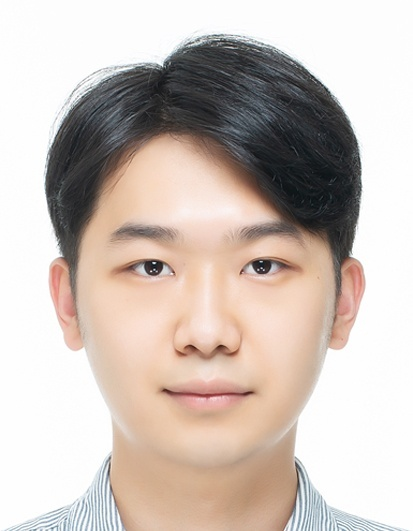

Sejong University · RCV Lab
I am an MS/PhD student at Sejong University, working with the CVML team at the Robotics and Computer Vision Lab, advised by Prof. Yukyung Choi.
My research asks how machines can truly understand video — perceiving, retrieving, and reasoning over time — spanning multimodal learning and open-vocabulary detection.

AI Solution Technology with Smart Vision
스마트 비전 활용 AI 솔루션 기술 개발
Multimodal AI-based Multi-purpose Video Retrieval System
멀티모달 AI 기반의 다목적 비디오 검색 시스템 개발
MS/PhD, Intelligent Mechatronics Engineering · Sejong University
Robotics and Computer Vision Lab (RCV), CVML Team · Advisor: Prof. Yukyung Choi
Undergraduate Research Program · RCV Lab, Sejong University
1.6 years of research participation
BS, Computer Science · Sejong University
Always glad to talk about video understanding, multimodal learning, or collaboration — reach me at sjpark@rcv.sejong.ac.kr.